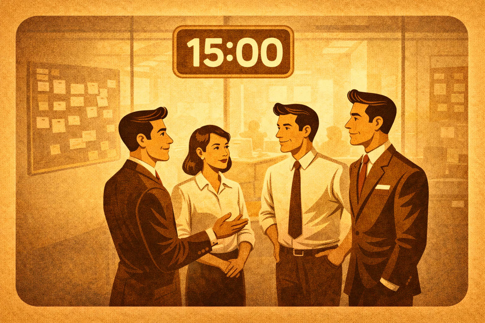

Project Management
Gestione di progetto nell'IT: smart working, Scrum, AI e consulenza. Articoli pratici da trent'anni di esperienza sul campo.
Ho visto project manager far piangere sviluppatori senior in riunione. Ho visto team brillanti distrutti da PM che confondevano l'autorità con l'autoritarismo. Ho visto software consegnati "in tempo" che non funzionavano, e progetti da milioni di euro finiti nel nulla.
E ho visto l'esatto contrario: team piccoli, autonomi, rispettati — che costruivano sistemi solidi in una frazione del tempo e del budget.
La differenza non è mai stata la tecnologia. È sempre stata il metodo.
Dopo trent'anni in questo mestiere, una cosa l'ho capita: le persone non danno il meglio quando hanno paura. Danno il meglio quando hanno fiducia.
Fiducia nel team. Fiducia nel processo. Fiducia nel fatto che se sbagliano non verranno punite — verranno aiutate.
📊 Come lavoro io
Il mio approccio è Scrum — ma Scrum fatto sul serio, non la liturgia dei post-it. Misuro poche cose, ma le misuro bene:
| Metrica | Cosa dice |
|---|---|
| Velocity | Quanto il team consegna per sprint |
| Lead time | Quanto passa da richiesta a rilascio |
| Bug escape rate | Quanti difetti sfuggono in produzione |
| Team happiness | La metrica più importante |
Ultimi articoli

5 regole che ho visto funzionare nei team di progetto che reggono
Un PM che cronometrava i minuti passati in bagno, un altro che filtrava il rumore e lasciava lavorare. Cinque regole osservate da entrambi i lati del tavolo che ricorrono nei team di progetto che tengono sotto pressione.

AI Manager e Project Management
Gestire l'AI non significa usare ChatGPT. Governare l'impatto su architetture, processi e persone.

Pagamenti a 60-90-120 giorni
Confronto tra regole europee e realtà italiana per chi lavora a partita IVA.

Bici vs Auto a Roma
Da Appio Latino a Prati in 50 minuti di traffico o 18 minuti di Brompton elettrica.

Smart working nella consulenza IT
I numeri che nessuno vuole guardare sulla convenienza del lavoro da remoto.

Quando il caos diventa metodo: AI e GitHub
Trasformare un progetto software caotico in un flusso di lavoro ordinato.

Standup meeting: perché funzionano solo se durano 15 minuti
Il vincolo dei 15 minuti come unica cosa che fa funzionare il daily meeting.